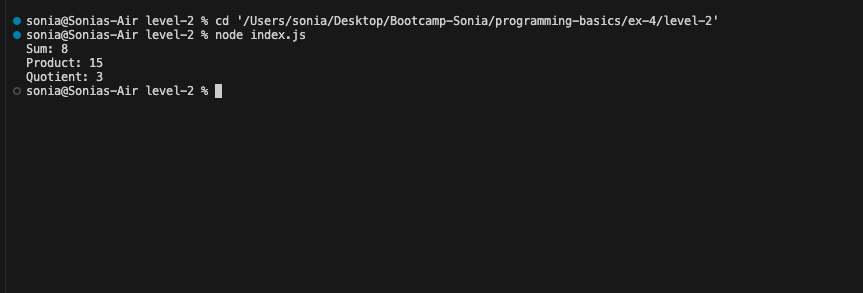
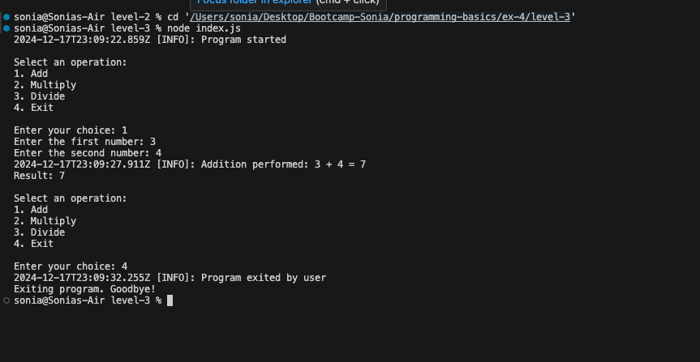

debugProblem Description:
debug package and set up a debugging namespace.debug function in a single module.Exit Criteria: Debug messages are displayed when the DEBUG environment variable is set.
Problem Description:
Exit Criteria: Debugging can be turned on or off for individual modules.
Problem Description:
debug with winston for structured logging and debugging.Exit Criteria: Debugging and logging work together seamlessly in the program.
debug.debug and winston for consistent logging.debug and winston integration for future reference.